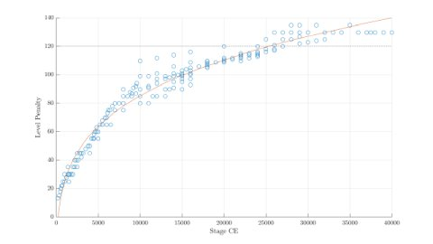
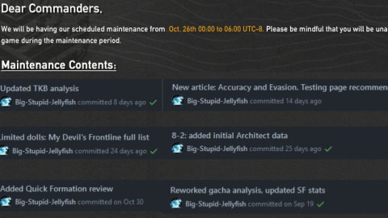

Girls' Frontline game mechanics, teambuilding, optimization, mythbusting, and similar fun stuff. Or other game/tech topics. Contact: /u/BigStupidJellyfish_. GF EN UID: 538721. Submit feedback/report an error.

